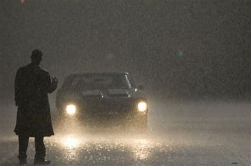

El estado de Sonora, ubicado en el noroeste de México, tiene una historia rica y variada que abarca desde la época precolombina hasta la era colonial y la formación del estado moderno. Aquí te presento un resumen de cómo surgió el estado de Sonora:
Población indígena: Antes de la llegada de los europeos, la región de Sonora estaba habitada por diversas culturas indígenas, como los yaquis, los mayos, los seris y los pápagos, entre otros. Estos grupos tenían sus propias estructuras sociales, idiomas y sistemas de subsistencia, y algunos de ellos, como los yaquis y los mayos, resistieron la conquista española durante siglos.
Conquista española: La exploración española de la región comenzó en el siglo XVI, cuando los conquistadores llegaron en busca de oro y otros recursos. La expedición de Francisco Vázquez de Coronado en 1540 fue una de las primeras incursiones europeas en el territorio que ahora es Sonora. Sin embargo, la colonización española real no comenzó hasta más tarde, con misiones y presidios establecidos para controlar y convertir a los indígenas.
Misiones y colonización: A lo largo de los siglos XVII y XVIII, los misioneros jesuitas y franciscanos establecieron misiones en la región para cristianizar a los indígenas y convertirlos en mano de obra para la agricultura y la minería. Estas misiones jugaron un papel importante en la configuración de la identidad cultural y económica de la región.
Independencia y formación del estado: Después de la independencia de México en 1821, Sonora se convirtió en parte del nuevo país. Durante el siglo XIX, Sonora fue escenario de luchas políticas y conflictos armados, incluida la guerra entre México y Estados Unidos (1846-1848), así como las guerras civiles y las revueltas locales. Finalmente, en 1830, Sonora se convirtió en un estado libre y soberano dentro de la federación mexicana.
Desarrollo moderno: A lo largo del siglo XX, Sonora experimentó un crecimiento económico significativo, especialmente en industrias como la minería, la agricultura y la pesca. La construcción de infraestructuras como carreteras y ferrocarriles también contribuyó al desarrollo del estado. Hoy en día, Sonora es conocido por su diversidad cultural, sus paisajes naturales impresionantes y su economía en constante crecimiento.
EN RESUMEN
En resumen, el estado de Sonora emergió de un proceso complejo que involucró la interacción entre las culturas indígenas precolombinas, la colonización española, la lucha por la independencia y el desarrollo económico y social en los siglos posteriores. Su historia es parte integral de la historia de México y continúa siendo relevante en la actualidad.
LA PRIMERA LEYENDA ES EL HOMBRE DE LA CARRERETERA
La leyenda del "Hombre de la Carretera" es una historia popular en varias partes de México, incluyendo el estado de Sonora. Esta leyenda cuenta la historia de un hombre solitario que deambula por las carreteras, a menudo en las noches oscuras y solitarias. Aunque las variantes de la historia pueden variar, generalmente el "Hombre de la Carretera" es descrito como un espíritu o fantasma que busca venganza por una injusticia que sufrió en vida.
En algunas versiones, se dice que el "Hombre de la Carretera" perdió la vida en un accidente de tráfico mientras viajaba por la carretera, y desde entonces su espíritu queda atrapado en ese lugar, acechando a los viajeros. En otras versiones, se le atribuyen actos malévolos, como causar accidentes o asustar a los conductores solitarios.
Esta leyenda se ha transmitido de generación en generación y forma parte del folclore popular de la región. Cada comunidad puede tener su propia variante de la historia, adaptada a sus circunstancias locales y experiencias compartidas.

A CONTINUACION MOSTRARE UN ARCHIVO AUDIO VISUAL
LA SEGUNDA LEYENDA ES LA DE LA PLANCHADA
La "Leyenda de La Planchada" es una historia popular en México que cuenta la historia de una mujer fantasmal que se aparece en hospitales para ayudar a los enfermos. La leyenda tiene varias versiones, pero una de las más conocidas relata lo siguiente:
Se dice que en el siglo XIX, durante la época de la Revolución Mexicana, vivía una mujer llamada Casilda. Casilda era una enfermera dedicada que trabajaba en un hospital en la Ciudad de México. Era conocida por su belleza y por su entrega al cuidado de los pacientes.
Un día, Casilda se enamoró de un médico del hospital, pero su amor no fue correspondido. El médico se casó con otra mujer, lo que llevó a Casilda a caer en una profunda tristeza y desesperación.
Ante su dolor, Casilda se descuidó a sí misma y se enfermó gravemente. Pasó días postrada en cama, consumida por la enfermedad. Sin embargo, en lugar de buscar ayuda médica, decidió ocultar su enfermedad y seguir trabajando en el hospital.
A pesar de su deterioro físico, Casilda continuó atendiendo a los pacientes, ayudándolos con sus dolencias. Algunos pacientes aseguraban que, durante la noche, una mujer vestida de blanco, con el rostro cubierto por un velo, aparecía en sus habitaciones y les proporcionaba alivio y consuelo.
Un día, cuando la enfermedad de Casilda se volvió insostenible, finalmente se desplomó y murió en el hospital. Desde entonces, se dice que su espíritu sigue visitando los hospitales, apareciéndose como "La Planchada", vestida con su uniforme blanco de enfermera, para seguir ayudando a los enfermos necesitados.
Esta leyenda se ha transmitido de generación en generación y forma parte del folclore mexicano. Algunas personas creen que La Planchada es un espíritu benevolente que sigue cuidando a los enfermos, mientras que otras consideran su aparición como un presagio de muerte.
A CONTINUACION MOSTRARE UN REPORTE DEL CANAL AL EXTREMO DONDE HABLA DE ESTA LEYENDA
LA ULTIMA LEYENDA ES LA MUJER DE BLANCO
La leyenda de la mujer de blanco es una historia popular en varias partes de México, incluida Sonora. La versión varía según la región, pero generalmente cuenta la historia de una mujer que aparece como un espectro o un fantasma, vestida completamente de blanco, que se manifiesta en lugares específicos, como carreteras solitarias, campos o edificios abandonados.
En la versión sonorense de la leyenda, se dice que la mujer de blanco es el espíritu de una mujer que murió trágicamente o que sufrió alguna injusticia en vida. Su presencia se asocia comúnmente con la fatalidad o el peligro. Algunas versiones sugieren que su espíritu vaga en busca de venganza o redención.
La historia suele ser contada como una advertencia, especialmente para los viajeros nocturnos, advirtiéndoles que tengan cuidado al encontrarse con una mujer solitaria vestida de blanco en la oscuridad. La narrativa de la leyenda puede variar según el narrador y las circunstancias locales, pero su esencia sigue siendo la misma: una historia de misterio, tragedia y el sobrenatural.
A CONTINUACION TE MOSTRARE UN VIDEO DE UNA TELEVISORA QUE MENCIONA ESTE TEMA